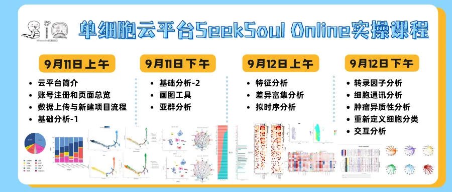
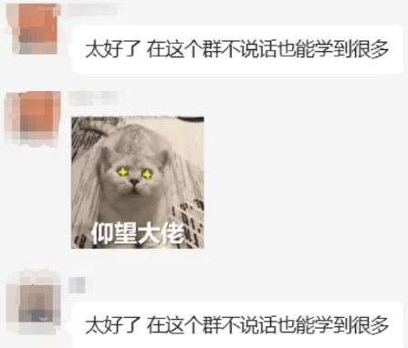
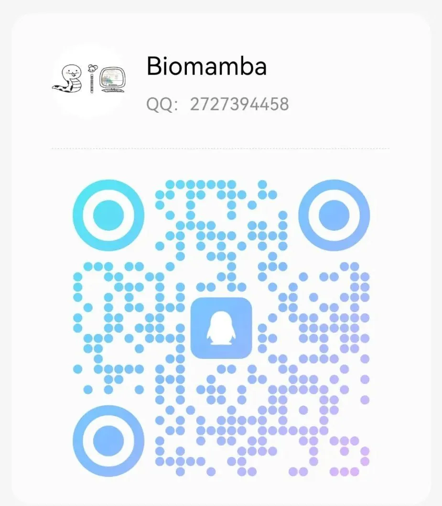

SeekSoulOnline云平台交流群
原文：https://mp.weixin.qq.com/s?__biz=MzAwMzIzOTk5OQ==&mid=2247530889&idx=2&sn=f4114c69ce6824248ed76b83a94c8863&chksm=9b3c00d9ac4b89cfc7142cd4cc40f5fb02e2ccbcaa32b7dbf6a5a5dd202a202de9de3f3d70cc#rd 合集：单细胞云平台

交流群矩阵


SeekSoulOnline已见刊，好工具得让大家都用起来！在举办两天学会单细胞分析直播的同时，我们也为大家组建了云平台专属交流群。大家在学习课程之余能够交流经验与技巧。更欢迎大家参加我们的免费课程！

声明，黑产(什么年代了，还有人买卖文章？)想入群发广告的不良商家请绕道 ：Biomamba生信基地黑榜。 提供生信交流的平台，相信在大家的互帮互助下能解决大部分问题(没事交流交流科研、解决bug报错、求助文献下载、交流投稿经验、吐槽吐槽老板、在群里交交朋友♂)。已有生信基地联系方式的同学无需重复添加


更多SeekSoul Online课程
一、基础教程
第一套：
第二套：
二、文章复现
零代码复现《Genome Medicine》|scRNA-seq解析CXCL16/CXCR6驱动驻留T细胞促进突触消除
** **
三、scATAC
持续更新中，敬请期待~
交流群矩阵
首先声明，黑产(什么年代了，还有人买卖文章？)想入群发广告的不良商家请绕道 ：Biomamba生信基地黑榜。为了创造便捷 、高效 、**绿色的交流环境 ，**进群需身份认证。我们按照大家的需求分门别类的组建了交流群，大家添加我们任意账号对应群名关键词即可进群。欢迎大家加入，毕竟按粉丝们的话来说，在群里不说话也能学习到很多

1、生信交流群：目前我们共维护了十五个交流群，用于给大家提供生信交流的平台，相信在大家的互帮互助下能解决大部分问题(没事交流交流科研，求助文献下载、交流投稿经验、吐槽吐槽老板、在群里交交朋友♂)。 2、实验基地交流群：实验基地已经建成，实验技能培养计划也已经热火朝天的开展中。我们给大家构建了实验交流群。大家可以在群中交流实验心得。 3、就业交流群：辛苦的学习与科研无非图个好的就业前景，我们也一直在求职/就业方面为大家提供平台与流量。也欢迎大家联系我们任意账号刊登个人信息，主动发布求职，让更多伯乐看到优秀的你！Biomamba生信基地长期招聘：欢迎大家来生信基地兼职/工作/参观。也欢迎各用人单位联系我们发布岗位。 4、科研相亲交流群：盼望着、盼望着，春天来了，又到了。。。(bushi)。在浩瀚的星空下，我们每个人都是孤单的星辰，怀揣着对知识的渴望，勇敢地探索着自己的科研领域。然而，偶尔在这条孤独的科研旅程中，我们渴望有一个能够理解我们、陪伴我们、与我们共鸣的人。也许，正是因为我们都在追求真理，才会更加懂得，生活中那些小小的温柔和真诚，才是最值得珍惜的宝藏。来吧，群里聊聊，没准能找到你缺少的那一半 。
5、国自然必中交流群承接我们去年的国自然活动，必中是一种态度！我们会将国自然交流群维护下去，祝愿各位的科研步伐所到之处，皆是坦途。
。
5、国自然必中交流群承接我们去年的国自然活动，必中是一种态度！我们会将国自然交流群维护下去，祝愿各位的科研步伐所到之处，皆是坦途。
6、影像组学交流群
影像组学+病理组学+深度学习是临床医生发表论文的几大法宝，我们将在群里定期分享影像组学相关知识与课程。
7、测序交流群
Illumina已经被列入不可靠实体清单，越来越多的国产平台在单细胞领域也能够替代10X。生信多组学建库与测序平台似乎进入了一个群雄割据的时代。任何关于技术、价格、样本特征的内容都欢迎群内交流~ 8、生信Linux交流群生物信息学的计算的物质基础可以说就是计算设备。为防止设备损坏，我们不推荐用自己的电脑做生信。若使用足够支持你完成硕博生涯的生信环境，则免不了学习Linux，毕竟依赖终端运行的生信软件很少有Windows版本。对于大部分生物学出身的同学而言学习Linux就成了一个苦差事，好在我们已经给大家制作了十小时学会Linux视频教程，另外还有合集生信Linux及服务器使用技巧；同时我们组建了生信Linux交流群，大家学习的同时可以在群里交流心得/烦恼。 9、QQ两千人交流群有粉丝反馈，觉得500人的群太小了，我已经充好了QQ会员给大家拉两千人的QQ群 。拉群qq号:

10、scATAC交流群
ATAC-seq使用高度活跃的Tn5转座酶将Illumina测序适配器插入可达染色质区域。原理为利用Tn5转座酶复合体，将带有标记的标签，与DNA进行孵育，裸露的DNA片段，将在转座酶的作用下，被置换出来，然后通过特异的标签引物进行PCR扩增，进行后续的测序工作。我们也分享过多篇scATAC相关内容：
snATAC联合scRNA揭示小鼠肾脏细胞分化程序和疾病靶点
一份样本变两份数据：单细胞 ATAC+RNA 多组学解决方案
4.6w字长文| SeekOne®-DD单细胞ATAC+RNA一胞双组学-学习手册
汤神都感兴趣的领域，显然值得好好了解一番，为此我们也专门给大家组建了scATAC交流群。
已有生信基地联系方式的同学无需重复添加

如何联系我们

 留一个领取资料、开箱即用的单细胞分析镜像的微信号[Biomamba_zhushou]，方便各位随时交流。同时我们也构建了交流群矩阵，欢迎大家入群讨论。
大家可以阅读完这几篇之后添加给生信入门初学者的小贴士
没有检索，就没有发言权
留一个领取资料、开箱即用的单细胞分析镜像的微信号[Biomamba_zhushou]，方便各位随时交流。同时我们也构建了交流群矩阵，欢迎大家入群讨论。
大家可以阅读完这几篇之后添加给生信入门初学者的小贴士
没有检索，就没有发言权
已有生信基地联系方式的同学无需重复添加
 您点的每个赞和在看，我都认真当成了喜欢
您点的每个赞和在看，我都认真当成了喜欢